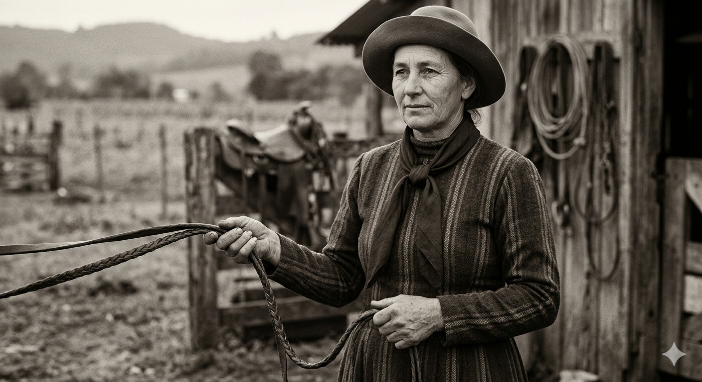
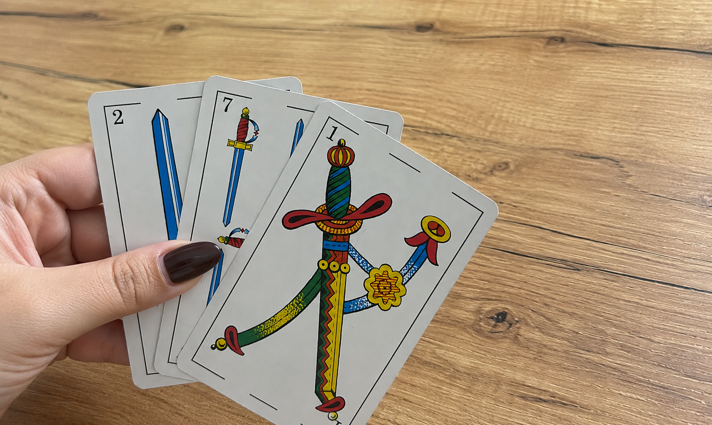
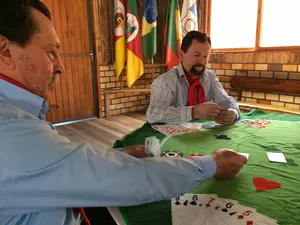
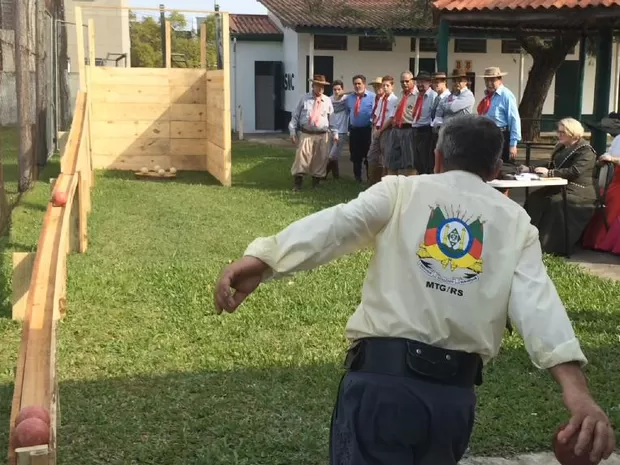
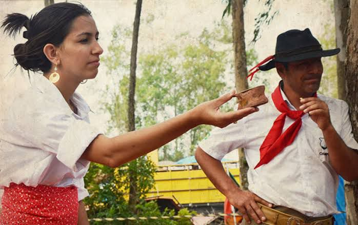
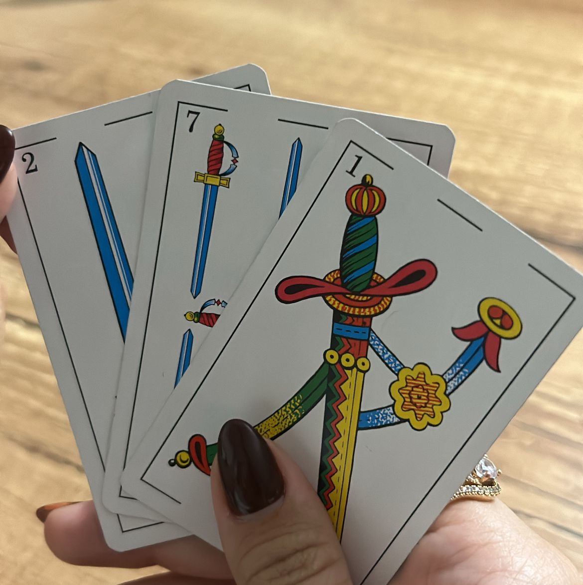
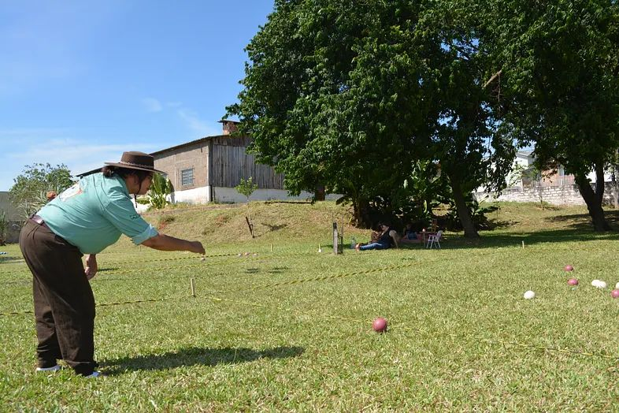

A presença feminina nos esportes campeiros representa tradição, resistência e transformação dentro da cultura gaúcha.
Relatos, registros e entrevistas que mostram a presença das mulheres nos esportes campeiros, destacando desafios, conquistas e a transformação desse cenário ao longo do tempo.
Durante muitos anos, os esportes campeiros foram vistos como ambientes predominantemente masculinos. Entretanto, a presença das mulheres cresceu significativamente, ocupando espaços de destaque em provas, competições e manifestações culturais tradicionalistas.
Esta pesquisa busca apresentar a trajetória feminina dentro desse universo, valorizando histórias, desafios e conquistas que ajudaram a transformar o cenário campeiro ao longo do tempo.

Conheça algumas das modalidades que fazem parte do universo campeiro e da presença feminina dentro das tradições gaúchas.

O truco é um jogo de cartas tradicionais, jogado com baralho espanhol de 40 cartas, caracterizado pelo uso de manilhas fixas, espadão, ás de basto, sete de espada e sete de ouro e pela forte presença da comunicação entre os jogadores, tanto por meio da fala quanto de sinais

O jogo de Solo é um jogo de cartas de origem espanhola, presente na cultura gaúcha desde aproximadamente 1800, sendo praticado por três jogadores, podendo haver um quarto participante, chamado carancho, que apenas distribui as cartas.

A bocha 48 é uma modalidade tradicional com forte presença no Rio Grande do Sul, introduzida por imigrantes italianos entre o final do século XIX e início do XX, jogada em duplas, na qual os participantes arremessam bochas com o objetivo de derrubar peças posicionadas sobre um cepo (base circular de madeira).

O jogo do osso, também conhecido como Tava ou Taba, é considerado um dos jogos mais antigos da humanidade, com raízes na Ásia e registros também na Europa, sendo possivelmente relacionado às práticas do antigo Império Persa e da Grécia.

O Truco de Amostra, ou Truco Uruguaio, tem origem na região fronteiriça entre o Uruguai e o Brasil (especialmente o Rio Grande do Sul). É uma variação do Truco Cego ou gaúcho, caracterizado pela presença da “amostra” (carta virada que define as manilhas), refletindo a influência do baralho espanhol e da cultura platina

A bocha campeira é um jogo disputado entre equipes com o objetivo de posicionar as bochas o mais próximo possível do bolim, buscando somar pontos a cada rodada. Cada jogador realiza seus arremessos tentando aproximar suas bochas ou afastar as do adversário, respeitando os limites da cancha.